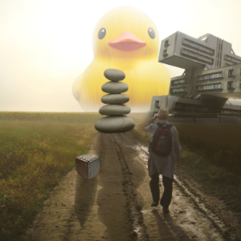
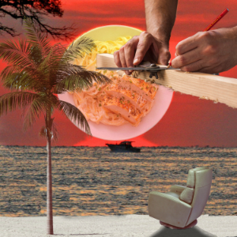

This is a collage of different images put together to form a triptych depicting how I would describe my mind, body, and
spirit. These collages were made in affinity photo, a photoshop alternative, for Intro to Digital Studio Practice in the
summer 2022 term.
I originally had no vision for how I wanted this project to look like. I was simply following the instructions trying to
complete everything. However, as a got a bit deeper into the project I saw interesting doing something like this was. It
also forced me to think about how I see myself as a person and try to think of ways to express that visually. Honestly, I
still don’t entirely feel like I did the best to express myself. For both mind and body, I tried my best to include a gradient
map to make each image feel like it fit in with the color scheme of the image as a whole. That was one of the more
important techniques that was utilized in this project.
Although these pieces may not have truly captured what I feel to be the embodiment of who I am, I was able to see
myself a little clearer than I have before.
Process Book
Back to the Home Page
{kind=link}
{kind=link}
{kind=link}